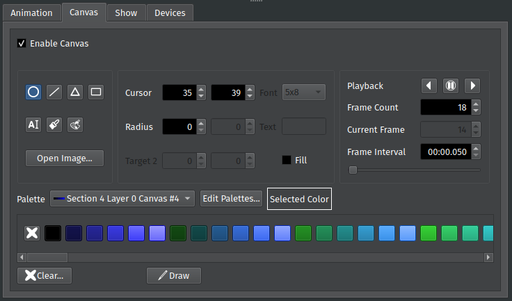

Canvas Tab¶
The Canvas tab lets you create and customize Canvases. Canvases let you draw shapes, load images, and even create custom animations.
To add a Canvas to the active Section, click Enable Canvas.
{kind=link}
Like Animations, Canvases use color palettes. The same palettes can be used for both components. However, Canvases are limited to the first 255 colors in a palette, since the last color is reserved for transparency.
Tip: To reapply a Palette after customizing it, simply reselect it from the drop-down.
Loading Images¶
You can load an image file into the Canvas by clicking the Load Image… button. You can select a PNG, JPEG, or GIF image file. If the image is animated, you can control its playback using the Animation Tools controls.
Drawing¶
Drawing on a Canvas works similar to a normal image editor. You select the drawing tool you wish to use, select the location where you want to draw, select your colors and any additional parameters, then click the Draw button. When free drawing, you can even draw directly on the Canvas using the mouse.
Drawing Tools¶
The Drawing Tools box provides controls for drawing on the the Canvas. Select a drawing tool using the icons on the left-hand side of the box. Depending on the tool you select, one or more text boxes will become enabled. These boxes require you to specify the coordinates, size, or other options needed to create the shape.
Tip: You can use the brush tool to free draw directly on the Canvas using your mouse.
When drawing shapes, only the outline of the shape is drawn by default. Checking Fill draws the shape filled in.
You will need to select a color before drawing a shape. Select a Palette using the Color Palette drop-down. Then, click on the color you want to use to set it as the drawing color. To clear a pixel, click the X button at the far left of the color list. This sets the active color to transparent. You can “draw” using this transparent color in order to erase parts of the Canvas.
Tip: Canvases have access to the same Palettes as Animations, but they can only use a maximum of 255 colors. Technically they support 256 colors, but the last color is reserved for transparency.
Specifying Coordinates¶
When drawing a shape, you will need to specify where you want to draw the shape. Canvases use a standard Cartesian coordinate system with the origin (0,0) starting in the top-left corner and increasing as you move away from the corner. For example, the point (2, 5) is 2 pixels to the right of the origin and 5 pixels down.
The coordinate boxes are found on the right-hand side of the Drawing Tools box:
The Cursor is the shape’s starting point. For rectangles and text this is the top-left corner, but for circles this is the center.
The Target is the shape’s ending point.
For lines and rectangles, this is the opposite point from the origin.
For circles, this is the radius.
For triangles, this is the location of the triangle’s second corner.
For triangles, Target 2 is the location of the triangle’s third corner.
Free Drawing¶
You can draw directly onto a Canvas by selecting the brush icon, selecting a color, and left-clicking directly on the Section. Use the right mouse button to erase, which sets the current pixel’s color to transparent.
You can also click on the Section with the replace tool selected to replace all pixels containing one color with another.
Replacing Colors¶
You can replace a particular color with another color by using the Replace tool. The Replace tool replaces all instances of one color across the entire frame with another color. Select the pixel containing the color you want to replace, select the new color in the Palette, then click Draw. You can also select the color by left-clicking directly on the Section.
Managing Animations¶
The Animation Tools box contains controls for managing and editing animations. Any Canvas with more than one drawing surface (called a frame) is an animated Canvas. Frame Count displays the total number of frames, while Current Frame displays the index of the current frame (while the animation is stopped). You can start or stop playback and step through frames using the playback buttons. Frame Interval sets the amount of time (in milliseconds) between each frame.
Tip: Use the arrow keys to step through individual frames while the animation is paused.
Clearing the Canvas¶
To erase the Canvas, click the Clear… button.
WARNING: This will erase every frame in the Canvas!